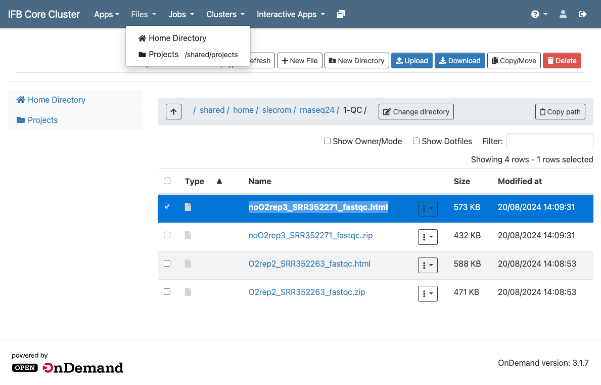

Preprocessing of high throughput data
Introduction
Objective of this practical session
During this practical session, you will learn:
-
To perform experimental biases estimation and correction of microarrays GPR files. You will first perform quality control of the imaged glass slides before choosing the best normalisation method to apply.
-
To conduct an analysis of RNA-seq raw fastq files. You will first perform quality control of the sequencer file outputs before proceding to the mapping of the reads onto the reference genome and normalise your data.
Microarrays data preprocessing
Set up your working environment
Connect to Rstudio server of the IFB. Look at the tutorial on how to connect to IFB-core Rstudio server to see how to proceed.
Save the working notebook in your personal environment
- In "File > Open File..." enter the path
/shared/projects/2528_ens_master2lf_fgat/data/tutorials/preprocessing_microarrays.Rmdto open the notebook containing all the code needed for the practical.
2. Save it into your personal folder on your IFB account using "File > Save As". You can access the path of your home folder using "~".
Follow the instruction of the notebook to conduct the analysis
You can also visualize the final report version.
You can find help on how to use R markdown on the R markdown project webpage.
RNAseq data preprocessing
Set up your working environment
Connect to the IFB-core JupyterLab server. Look at the tutorial to see how to proceed. You can also look at the useful commands to work on the IFB-core Cluster page.
Go to your home directory
cd
Create a directory that will contain all results of the upcoming analyses
mkdir RNAseq
Go to the newly created directory
cd RNAseq
Check your are in the right directory using the pwd command
pwd
/shared/home/<your login>/RNAseq
Sequence quality controls
Fastq files
Fastq files are raw results from RNA-seq experiments. These files comprise all the sequences (or reads) obtained from the sequencer device (Illumina technology in this practical), together with base quality scores (PHRED scores).
Two different files will be analyzed during this practical from Guida et al. publication:
- O2rep2_SRR352263.fastq refereed to a transcriptome analysis of yeasts C. parapsilosis under normoxic condition (ENA access number: SRR352263)
- noO2rep3_SRR352271.fastq refereed to a transcriptome analysis of yeasts C. parapsilosis under hypoxic condition (ENA access number: SRR352271)
In a first step, controls will be performed on each FASTQ files in order to evaluate the overall quality of the sequences and identify potential problems that could impact the following analyses. During this practical we will use the FastQC software solution.
FastQC
FastQC is a quality control application for high throughput sequence data. It provides an interactive application to review the results of several different quality control checks, and create an HTML based report.
The main functions of FastQC are:
- Import of data from BAM, SAM or FastQ files (any variant)
- Providing a quick overview to tell you in which areas there may be problems
- Summary graphs and tables to quickly assess your data
- Export of results to an HTML based report
- Offline operation mode to allow automated generation of reports without running the interactive application
What you have to do
- Use FASTQC to evaluate the quality of sequences in each FASTQ files. Using information from the Fastqc help page as well as exemples of good or bad illumina data as references.
- Compare results between the two FASTQ files. Is there any concern related to the following analyses?
Create a new directory to store the output of fastqc
mkdir 1-QC
# Using the `tree` command, your directory should look like this:
tree
│
└───1-QC
Go to this directory
cd 1-QC
Make fastqc available in your environment
module load fastqc/0.12.1
Run fastqc on each experiment files
# Absolute path to the file:
# /shared/projects/2528_ens_master2lf_fgat/data/rnaseq/O2rep2_SRR352263.fastq
#
# -o option creates all output files in the specified output directory,
# '.' means current directory
# O2 condition
fastqc /shared/projects/2528_ens_master2lf_fgat/data/rnaseq/O2rep2_SRR352263.fastq -o .
# noO2 condition
fastqc /shared/projects/2528_ens_master2lf_fgat/data/rnaseq/noO2rep3_SRR352271.fastq -o .
At this point you should see the new files in your directory using the tree command
tree
│
└───1-QC
└─── O2rep2_SRR352263.fastqc.html
└─── O2rep2_SRR352263.fastqc.zip
└─── noO2rep3_SRR352271.fastqc.html
└─── noO2rep3_SRR352271.fastqc.zip
Open the HTML file reports on your local machine
Select "Home directory", from the "Files" menu of your IFB cluster Open On Demand dashboard. Navigate through the "1-QC" directory and open the .html reports using your internet browser.

Mapping of reads on the reference genome
Once data quality is verified, reads will be mapped onto the reference genome of yeast C. parapsilosis. The genome sequence of C. parapsilosis and its annotations (locations of ORFs) were retrieved from the Candidat genome database (CGD).
Bowtie
Different aligner and algorithms for RNA-seq analysis exist. We will use Bowtie 1.3 an ultrafast (memory-efficient) short read aligner.
As an input, Bowtie uses a Fastq file (with reads to be aligned) and “pre-built indexes” of the reference genome. These indexes are named “C_parapsilosis.1.ebwt”, “C_parapsilosis.2.ebwt”, etc. They will allow boosting the alignment process.
As an output, Bowtie provides a SAM file. SAM (Sequence Alignment/Map) is a generic format for storing large nucleotide sequence alignments.
What you have to do
- Run sequence alignments with Bowtie using the two Fastq files
- While Bowtie is running, take a look at Bowtie documentation that describes the options (particularly the -m)
- Look at the alignment statistic outputs (file .out)
- What is the proportion of reads aligned on the reference genome?
- Is there any concern to take into account for the following analyses?
Create a new directory to store the output of bowtie
#Go back to the parental directory "RNAseq"
cd ../
#Create a new directory to store results of the alignment
mkdir 2-Mapping
Your directory should now look like this :
tree
│
└───1-QC
└─── O2rep2_SRR352263.fastqc.html
└─── O2rep2_SRR352263.fastqc.zip
└─── noO2rep3_SRR352271.fastqc.html
└─── noO2rep3_SRR352271.fastqc.zip
└─── 2-Mapping
Go to the newly created directory
cd 2-Mapping
Load Bowtie into your environment
module load bowtie/1.3.1
Map the reads to the reference genome
## We will use the following options:
# "-S" will output the result in SAM format
#
# "/shared/projects/2528_ens_master2lf_fgat/data/rnaseq/bowtie_indexes/C_parapsilosis"
# specify the location and the "prefix (C_parapsilosis)"" of the bowtie's
# index files
#
# "/shared/projects/2528_ens_master2lf_fgat/data/rnaseq/Fastqc/O2rep2_SRR352263.fastq.gz"
# location of the input fastq
#
# "2>" will save in a file some statistics about the aligment (number of
# reads mapped, etc...)
#
# "> redirects the mapping output into a .sam file
# Map the aerobic condition reads
bowtie -S /shared/projects/2528_ens_master2lf_fgat/data/rnaseq/bowtie_indexes/C_parapsilosis /shared/projects/2528_ens_master2lf_fgat/data/rnaseq/O2rep2_SRR352263.fastq 2> O2rep2_SRR352263_bowtie_mapping.out > O2rep2_SRR352263_bowtie_mapping.sam
# Map the hypoxic condition reads
bowtie -S /shared/projects/2528_ens_master2lf_fgat/data/rnaseq/bowtie_indexes/C_parapsilosis /shared/projects/2528_ens_master2lf_fgat/data/rnaseq/noO2rep3_SRR352271.fastq 2> noO2rep3_SRR352271_bowtie_mapping.out > noO2rep3_SRR352271_bowtie_mapping.sam
Your directory should now look like this :
tree
.
├── 1-QC
│ ├── O2rep2_SRR352263_fastqc.html
│ ├── O2rep2_SRR352263_fastqc.zip
│ ├── noO2rep3_SRR352271_fastqc.html
│ └── noO2rep3_SRR352271_fastqc.zip
└── 2-Mapping
├── O2rep2_SRR352263_bowtie_mapping.out
├── O2rep2_SRR352263_bowtie_mapping.sam
├── noO2rep3_SRR352271_bowtie_mapping.out
└── noO2rep3_SRR352271_bowtie_mapping.sam
Take a look at the outputs of the mapping step
less O2rep2_SRR352263_bowtie_mapping.out
# reads processed: 10213665
# reads with at least one reported alignment: 9160950 (89.69%)
# reads that failed to align: 1052715 (10.31%)
# reported 9160950 alignments
less noO2rep3_SRR352271_bowtie_mapping.out
# reads processed: 10136009
# reads with at least one reported alignment: 9252408 (91.28%)
# reads that failed to align: 883601 (8.72%)
# reported 9252408 alignment
Post-processing of alignment files
In order to facilitate alignement manipulation, SAM files have to be converted into BAM files (a binary version) and alignements “sorted” according to their localisation on the genome and files indexed in order to speed up their access. We will use the Samtools suite to perform these steps.
What you have to do
- Convert SAM files into BAM files
- Sort and index BAM files
Sort and convert .sam into .bam files
## "samtools sort" sort alignments by genomic coordinates
# "|" "pipe" the output of samtools sort to the next program
#
## "samtools view" will convert sam into bam
# option "-b" specify the output to be in BAM format
# ">"" write the output in the bam file
module load samtools/1.21
# Sort and convert O2 condition
samtools sort O2rep2_SRR352263_bowtie_mapping.sam | samtools view -b > O2rep2_SRR352263_bowtie_sorted.bam
# Sort and convert noO2 condition
samtools sort noO2rep3_SRR352271_bowtie_mapping.sam | samtools view -b > noO2rep3_SRR352271_bowtie_sorted.bam
Error message using samtools
If you get an error message during samtools execution, check that you booked 2G of RAM for your JupyterLab environment.
Create indexes for the bam files
The index of a bam file is named .bam.bai
# Index the O2 condition
samtools index O2rep2_SRR352263_bowtie_sorted.bam
# Index the noO2 condition
samtools index noO2rep3_SRR352271_bowtie_sorted.bam
Your directory should now look like this :
tree
.
├── 1-QC
│ ├── O2rep2_SRR352263_fastqc.html
│ ├── O2rep2_SRR352263_fastqc.zip
│ ├── noO2rep3_SRR352271_fastqc.html
│ └── noO2rep3_SRR352271_fastqc.zip
└── 2-Mapping
├── O2rep2_SRR352263_bowtie_mapping.out
├── O2rep2_SRR352263_bowtie_mapping.sam
├── O2rep2_SRR352263_bowtie_sorted.bam
├── O2rep2_SRR352263_bowtie_sorted.bam.bai
├── noO2rep3_SRR352271_bowtie_mapping.out
├── noO2rep3_SRR352271_bowtie_mapping.sam
├── noO2rep3_SRR352271_bowtie_sorted.bam
└── noO2rep3_SRR352271_bowtie_sorted.bam.bai
Gene counts estimation
To identify genes whose expression is different between hypoxic and normoxic conditions, we will count and compare the number of reads mapped to each ORF. A program available in the Bedtools suite will be used for this purpose.
What you have to do
- Calculate for each ORF the number of reads that were aligned (normoxic and hypoxic conditions).
Create a new directory to store the ORF count matrix
# Go to the parental directory "RNAseq"
cd ../
# Create a new directory to store results of the alignment
mkdir 3-Counts
Your directory should now look like this :
tree
.
├── 1-QC
│ ├── O2rep2_SRR352263_fastqc.html
│ ├── O2rep2_SRR352263_fastqc.zip
│ ├── noO2rep3_SRR352271_fastqc.html
│ └── noO2rep3_SRR352271_fastqc.zip
├── 2-Mapping
│ ├── O2rep2_SRR352263_bowtie_mapping.out
│ ├── O2rep2_SRR352263_bowtie_mapping.sam
│ ├── O2rep2_SRR352263_bowtie_sorted.bam
│ ├── O2rep2_SRR352263_bowtie_sorted.bam.bai
│ ├── core
│ ├── noO2rep3_SRR352271_bowtie_mapping.out
│ ├── noO2rep3_SRR352271_bowtie_mapping.sam
│ ├── noO2rep3_SRR352271_bowtie_sorted.bam
│ └── noO2rep3_SRR352271_bowtie_sorted.bam.bai
└── 3-Counts
Go to the newly created directory
cd 3-Counts
Calculate for each ORF the number of reads that were aligned to it
module load bedtools/2.31.1
# Counting matrix for the O2 condition
bedtools multicov -bams ../2-Mapping/O2rep2_SRR352263_bowtie_sorted.bam -bed /shared/projects/2528_ens_master2lf_fgat/data/rnaseq/C_parapsilosis_ORFs.gff > O2rep2_SRR352263_gene_counts.gff
# Output formating
sed 's/^.*ID=//' O2rep2_SRR352263_gene_counts.gff > O2rep2_SRR352263_gene_counts.tab
# Counting matrix for the noO2 condition
bedtools multicov -bams ../2-Mapping/noO2rep3_SRR352271_bowtie_sorted.bam -bed /shared/projects/2528_ens_master2lf_fgat/data/rnaseq/C_parapsilosis_ORFs.gff > noO2rep3_SRR352271_gene_counts.gff
# Output formating
sed 's/^.*ID=//' noO2rep3_SRR352271_gene_counts.gff > noO2rep3_SRR352271_gene_counts.tab
Take a look at the final counting matrices to see how the files are organised.
At the end of RNA-seq data analysis your directory should look like this :
tree
.
├── 1-QC
│ ├── O2rep2_SRR352263_fastqc.html
│ ├── O2rep2_SRR352263_fastqc.zip
│ ├── noO2rep3_SRR352271_fastqc.html
│ └── noO2rep3_SRR352271_fastqc.zip
├── 2-Mapping
│ ├── O2rep2_SRR352263_bowtie_mapping.out
│ ├── O2rep2_SRR352263_bowtie_mapping.sam
│ ├── O2rep2_SRR352263_bowtie_sorted.bam
│ ├── O2rep2_SRR352263_bowtie_sorted.bam.bai
│ ├── core
│ ├── noO2rep3_SRR352271_bowtie_mapping.out
│ ├── noO2rep3_SRR352271_bowtie_mapping.sam
│ ├── noO2rep3_SRR352271_bowtie_sorted.bam
│ └── noO2rep3_SRR352271_bowtie_sorted.bam.bai
└── 3-Counts
├── O2rep2_SRR352263_gene_counts.gff
├── O2rep2_SRR352263_gene_counts.tab
├── noO2rep3_SRR352271_gene_counts.gff
└── noO2rep3_SRR352271_gene_counts.tab
Unload the tools you used
module unload fastqc/0.12.1 bowtie/1.3.1 samtools/1.21 bedtools/2.31.1
Count matrix normalisation
Connect to Rstudio server of the IFB. Look at the tutorial on how to connect to IFB-core Rstudio server to see how to proceed.
Save the working notebook in your personal environment
- In "File > Open File..." enter the path
/shared/projects/2528_ens_master2lf_fgat/data/tutorials/preprocessing_rnaseq.Rmdto open the notebook containing all the code needed for the practical.
2. Save it into your personal folder on your IFB account using "File > Save As"
Follow the instruction of the notebook to conduct the analysis
You can also visualize the final report version.
You can find help on how to use R markdown on the R markdown project webpage.